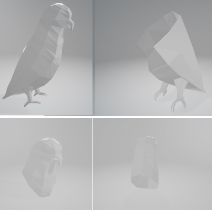

Design Process
The entire design process was carefully planned, starting with conceptualization, and ending with the production of intricate 3D models. Using Blender and, the team carefully designed every part of the parrot, taking extra care to ensure anatomical accuracy and aesthetic appeal.
More Information
